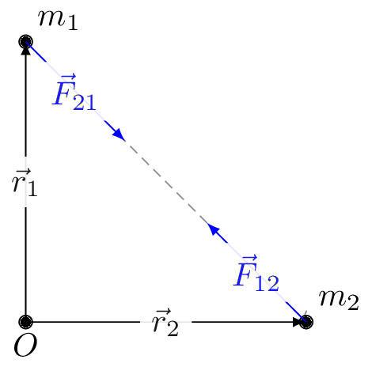

pre.tex
\documentclass[tikz]{standalone}\input{pre.tex}\begin{document}\begin{tikzpicture}
\coordinate (A) at (0,0);
\coordinate (0) at (0,-3);
\coordinate (B) at (3,-3);
\coordinate (A') at (0,0);%(1,-1);
\coordinate (B') at (3,-3);%(2,-2);
\draw %
(A') node [above right] {$m_1$}%
% (A') node [below left] {$x_1$}%
% (B') node [below left] {$x_2$}%
(B') node [above right] {$m_2$};
\draw[axis,->] (A) -- (B);% node[above right] {$+x$};
\draw[fill=black] (A') circle (2pt) (B') circle (2pt) (0) circle (2pt) node[below] {$O$};
\draw[->, >=latex,blue] (A) -- node[midway,fill=white!20, opacity=0.9] {$\vec{F}_{21}$} ++(-45:1.5);
\draw[->, >=latex,blue] (B) -- node[midway,fill=white!20, opacity=0.9] {$\vec{F}_{12}$} ++(135:1.5);
\draw[->, >=latex] (0) -- node[midway,fill=white!20, opacity=0.9] {$\vec{r}_{1}$} (A);
\draw[->, >=latex] (0) -- node[midway,fill=white!20, opacity=0.9] {$\vec{r}_{2}$} (B);
\end{tikzpicture}\end{document}